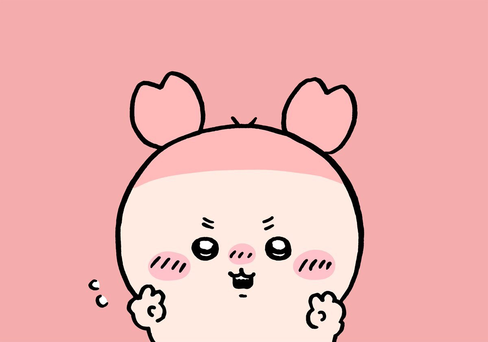

The pink character reading a book is Furuhonya, often called Kani-chan by fans. Furuhonya buys and sells secondhand books and loves reading. They are kind and considerate, providing a gentler contrast to Momonga's more demanding personality. Personality: Sweet, bookish, patient, and thoughtful. Fun fact: The crab-shaped headband was a gift from Momonga, and the two have a close friendship. Character list!